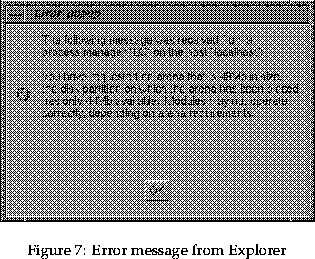
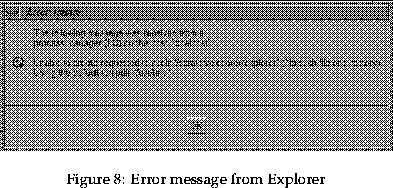

The two main error messages that will appear when using Explorer are shown in figures 7 and 8.


Figure 7 is referring to the arena size for Explorer, that is the area where modules, maps etc. will be stored whilst Explorer is being used. Figure 8 refers to a destination which has been specified for the arena in the users .explorerrc. Both errors can be ignored in many cases, however a small arena size (15Mb or less) can cause many modules to be dumped by Explorer.